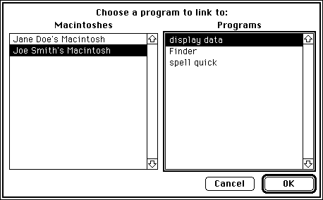

Specifying Port Names and Location Names
Before initiating a session, you must open a port to communicate with other programs. A port name and location name identify each port. An application can open as many ports as it requires as long as each port name is unique within a particular computer. You specify both the port name and the location name in the PPC parameter block.Figure 11-10 illustrates a single Macintosh computer with two applications, and their corresponding port names and location names.
To open a port, you need to specify a port name. A port name consists of a name string, a type string, and a script code for localization. For example, you can designate "make memo" as the application's name string, "word processor" as its type string, and "smRoman" as its script code.
A port name is defined by a PPC port record. The PPC port record contains a script code, name string, port kind selector, and type string. The script code is an integer script identifier used for localization. The name string consists of a 32-byte character string that designates the application name. You should keep both the script code and the name string in a resource. The port kind selector is an integer that selects the kind of type string. You should make it consistent internationally. The type string can be either a 32-byte character string or a 4-character creator and a 4-character file type. See the chapter "Finder Interface" of Inside Macintosh: Macintosh Toolbox Essentials for information on creators and file types. See Inside Macintosh: Text for information on script codes and localization.
Figure 11-10 Two Macintosh applications and their corresponding ports
The
PPCPortRecdata type defines the PPC port record.
TYPE PPCPortRec = RECORD nameScript: ScriptCode; {script identifier} name: Str32; {port name in program } { linking dialog box} portKindSelector: PPCPortKinds; {general category of } { application} CASE PPCPortKinds OF ppcByString: (portTypeStr: Str32); ppcByCreatorAndType: (portCreator: OSType; portType: OSType); END;The location name identifies the location of the computer on the network. The PPC Toolbox provides the location name when the user starts up the computer. The location name is specified in the standard Name-Binding Protocol (NBP) form, <object string>:PPCToolBox @<AppleTalk zone>. The object string is the name provided in the Sharing Setup control panel in the Control Panels folder. By default, the type string is "PPCToolBox". The AppleTalk zone is the zone to which the particular Macintosh computer belongs. For example, "Jane Doe's Macintosh:PPCToolBox@twilight" specifies the object string, type string, and AppleTalk zone for a particular computer.The
LocationNameRecdata type defines the location name record. ThelocationKindSelectorfield can be set toppcNoLocation,ppcNBPLocation, orppcNBPTypeLocation.
TYPE LocationNameRec = RECORD locationKindSelector: PPCLocationKind; {which variant} CASE PPCLocationKind OF {ppcNoLocation: storage not used by this value} ppcNBPLocation: (nbpEntity: EntityName); {NBP name entity} ppcNBPTypeLocation: (nbpType: Str32); {just the NBP type } { string for the } { PPCOpen function} END;TheppcNoLocationconstant is used when the location received from or passed to a PPC Toolbox function is the location of the local machine.The
ppcNBPLocationconstant is used when a full NBP entity name is received from or passed to a PPC Toolbox function.
The
- Note
- You should assign an NBP value directly--do not pack it using
nbpSetEntity.
ppcNBPTypeLocationconstant is used only by thePPCOpenfunction when an alias location name is needed.The NBP type to be used for the alias location name is passed in the location name record's
nbpTypefield. Alias location names allow you to filter the NBP objects (Macintosh computers) displayed by the program linking dialog box (shown in
Figure 11-12 on page 11-22) using thePPCBrowserfunction. See "Browsing for Ports Using the Program Linking Dialog Box" beginning on page 11-22 for information on thePPCBrowserfunction.An alias location name could be used to advertise a service (such as a dictionary service) that is available to any application located on the network. For example, "Joe Smith's Macintosh: dictionary@ozone" specifies the object string, type string, and AppleTalk zone for a particular dictionary service.
To search for all dictionary services available within a zone, you use the
PPCBrowserfunction and a filter. Figure 11-11 illustrates a Macintosh dictionary service application, its corresponding port name, and its alias location name.Figure 11-11 The PPC Toolbox and a dictionary service application
Opening a Port
To open a port and associate a name with it, use thePPCOpenfunction. Listing 11-2 illustrates how you use thePPCOpenfunction to open a port. In this listing, the name is "Inside Macintosh" and the port type string is "Example". The location name is <object string>:PPC Example@<AppleTalk zone>.Listing 11-2 Opening a PPC port
FUNCTION MyPPCOpen(VAR thePortRefNum: PPCPortRefNum; VAR nbpRegisteredFlag: Boolean): OSErr; VAR thePPCOpenPBRec: PPCOpenPBRec; thePPCPortRec: PPCPortRec; theLocationNameRec: LocationNameRec; BEGIN WITH thePPCPortRec DO BEGIN {nameScript and name should be resources to allow } { easy localization} nameScript := smRoman; {Roman script} name := 'Inside Macintosh'; {the port type should always be hard-coded to allow the } { application to find ports of a particular type even } { after the name is localized} portKindSelector := ppcByString; portTypeStr := 'Example'; END; WITH theLocationNameRec DO BEGIN locationKindSelector := ppcNBPTypeLocation; nbpType := 'PPC Example'; END; WITH thePPCOpenPBRec DO BEGIN serviceType := ppcServiceRealTime; resFlag := 0; {must be 0 for 7.0} portName := @thePPCPortRec; locationName := @theLocationNameRec; networkVisible := TRUE; {make this a visible } { entity on the network} END; MyPPCOpen := PPCOpen(@thePPCOpenPBRec, FALSE);{synchronous} thePortRefNum := thePPCOpenPBRec.portRefNum; nbpRegisteredFlag := thePPCOpenPBRec.nbpRegistered; END;ThePPCOpenfunction opens a port with the port name and location name specified in thenameandlocationfields of the parameter block. When thePPCOpenfunction completes execution, theportRefNumfield returns the port reference number. You can use the port reference number in thePPCInform,PPCStart,StartSecureSession, andPPCClosefunctions to refer to the port you have opened.Browsing for Ports Using the Program Linking Dialog Box
Before initiating a session, you can use either thePPCBrowserfunction or theIPCListPortsfunction to locate a port to communicate with.Use the
PPCBrowserfunction to display the program linking dialog box (shown in Figure 11-12) on the user's screen.
Figure 11-12 The program linking dialog box
- Note
- Because this function displays a dialog box on the user's screen, you must not call the
PPCBrowserfunction from an application that is running in the background.
In the program linking dialog box, the user selects the computer, zone, and application. The zone list is not displayed if there is no network connection. Figure 11-13 shows the dialog box without the zone list.
Figure 11-13 The program linking dialog box without a zone list

As shortcuts for the user, the program linking dialog box supports standard keyboard equivalents. Pressing Command-period or the Esc (Escape) key selects Cancel--pressing Enter or Return selects the OK button.
Each list is sorted in alphabetical order. As in the Chooser, the current list is indicated by a thick outline around its border. The program linking dialog box supports keyboard navigation and use of the arrow keys to select items from the current list. Pressing Tab or clicking the rectangle of another list switches the current list. Pressing Shift-Tab reverses the order in which the lists are selected. In addition, double-clicking an application name in the Programs list of the program linking dialog box is equivalent to clicking the OK button.
The
PPCBrowserfunction allows users to browse for PPC ports.
err := PPCBrowser (prompt, applListLabel, defaultSpecified, theLocation, thePortInfo, portFilter, theLocNBPType);If thedefaultSpecifiedparameter isTRUE, thePPCBrowserfunction tries to select the PPC port specified by the parameterstheLocationandthePortInfowhen the program linking dialog box first appears. If the default cannot be found, thePPCBrowserfunction selects the first PPC port in the list.An application can open multiple ports as long as each port name is unique within a particular computer. Unique ports can have duplicate name fields but different types. For example, you can designate "make memo" as the application's name string and "word processor" as its type string. You can also designate a separate port as "make memo" (the application's name string) and "text only" (its type string).
In such a case, the
PPCBrowserfunction does a secondary sort based on the port type. Ports with a type selector ofppcByCreatorAndTypeare displayed beforeppcByStringports, and types are sorted alphabetically within each type selector.The
PPCBrowserfunction uses theIPCListPortsfunction to obtain the list of existing ports on a particular computer within a particular zone. TheportFilterparameter of thePPCBrowserfunction allows you to filter the list of PPC ports before it displays them in the program linking dialog box. If you set theportFilterparameter toNIL, thePPCBrowserfunction displays the names of all the existing PPC ports returned by theIPCListPortsfunction. If you do not set theportFilterparameter toNIL, you must set it to a pointer to a port filter function that you create.Listing 11-3 illustrates how you use a sample port filter function. In this listing, the
MyBrowserPortFilterfunction returnsTRUEfor ports with the port type string "Example".Listing 11-3 Using a port filter function
FUNCTION MyBrowserPortFilter(theLocationNameRec: LocationNameRec; thePortInfoRec: PortInfoRec) : Boolean; BEGIN IF thePortInfoRec.name.portKindSelector = ppcByString THEN IF thePortInfoRec.name.portTypeStr = 'Example' THEN MyBrowserPortFilter := TRUE ELSE MyBrowserPortFilter := FALSE ELSE MyBrowserPortFilter := FALSE; END;ThePPCBrowserfunction calls your filter function once for each port on the selected computer. Your function should returnTRUEfor each port you want to display in the program linking dialog box, andFALSEfor each port that you do not want to display. Do not modify the data in the filter function parameterstheLocationNameRecandthePortInfoRec.The
PPCBrowserfunction returns the selected port name in the parameterthePortInfo. TheIPCListPortsfunction returns the port names in the area of memory pointed to by thebufferPtrfield of theIPCListPortsparameter block. Both functions specify each port name in a port information record.
TYPE PortInfoRec = RECORD filler1: SignedByte; {space holder} authRequired: Boolean; {authentication required} name: PPCPortRec; {port name} END;If theauthRequiredfield returnsTRUE, the port requires authentication before a session can begin. You should use theStartSecureSessionfunction to initiate a session with this port. If this field returnsFALSE, you can use either thePPCStartfunction or theStartSecureSessionfunction to initiate a session. See "Initiating a PPC Session" beginning on page 11-29 for detailed information. Thenamefield of the port information record specifies an available port name.Listing 11-4 illustrates how you use the
PPCBrowserfunction to display the program linking dialog box in order to obtain the location and name of a port chosen by the user. In this listing, thePPCBrowserfunction builds lists of zones (shown in the AppleTalk Zones list of the program linking dialog box), objects (shown in the Macintoshes list), and ports (shown in the Programs list). In this example, thePPCBrowserfunction next tries to default to object "Moof" in the "Twilight" zone. If it matches the object and zone, it also tries to default to the port "Inside Macintosh" with the port type "Example". Note that the data in the records
LocationNameRecandPortInfoRecis used to match the names in the program linking dialog box. The data has nothing to do with the NBP type used byNBPLookupor the filtered PPC ports that show up in the program linking dialog box. TheNBPLookupfunction uses the NBP type supplied intheLocNBPType. The PPC port names are filtered using theMyBrowserPortFilterfunction shown in Listing 11-3 on page 11-24.Listing 11-4 Browsing through dictionary service ports
FUNCTION MyPPCBrowser(VAR theLocationNameRec: LocationNameRec; VAR thePortInfoRec: PortInfoRec): OSErr; VAR prompt: Str255; applListLabel: Str255; defaultSpecified: Boolean; theLocNBPType: Str32; BEGIN prompt := 'Choose an example to link to:'; applListLabel := 'Examples'; defaultSpecified := TRUE; WITH theLocationNameRec DO BEGIN locationKindSelector := ppcNBPLocation; WITH nbpEntity DO BEGIN objStr := 'Moof(TM)'; {typeStr is ignored} zoneStr := 'Twilight'; END; END; WITH thePortInfoRec.name DO BEGIN {nameScript and name should be resources to allow easy } { localization} nameScript := smRoman; {Roman script} name := 'Inside Macintosh'; {the port type should always be hard-coded to allow the } { application to find ports of a particular type even } { after the name is localized} portKindSelector := ppcByString; portTypeStr := 'Example'; END; {when building the list of objects (Macintoshes), } { show only those with the NBP type "PPC Example"} theLocNBPType := 'PPC Example'; {match this NBP type} MyPPCBrowser := PPCBrowser(prompt, applListLabel, defaultSpecified, theLocationNameRec, thePortInfoRec, @MyBrowserPortFilter, theLocNBPType); END;Obtaining a List of Available Ports
To generate a list of ports without displaying dialog boxes, you can use theIPCListPortsfunction. TheIPCListPortsfunction allows you to obtain a list of ports on a particular computer within a particular zone. To obtain a list of ports, several steps are required. First, use theGetZoneListfunction to obtain a list of zones. Next, you must use thePLookupNamefunction to obtain a list of computers with ports. After establishing the zone and the computer, you can use theIPCListPortsfunction to obtain the list of available ports. See Inside Macintosh: Networking for information on theGetZoneListandPLookupNamefunctions.Listing 11-5 illustrates how you use the
IPCListPortsfunction to obtain a list of ports on a particular computer. This function returns a list of port information records in the buffer pointed to by the parameterthePortInfoBufferPtr. The actual number of port information records is returned in the parametertheActualCount.Listing 11-5 Using the
IPCListPortsfunction to obtain a list of ports
FUNCTION MyIPCListPorts (theStartIndex: Integer; theRequestCount: Integer; VAR theActualCount: Integer; theObjStr: Str32; theZoneStr: Str32; thePortInfoBufferPtr: PortInfoArrayPtr): OSErr; VAR theIPCListPortsPBRec: IPCListPortsPBRec; thePPCPortRec: PPCPortRec; theLocationNameRec: LocationNameRec; BEGIN {list all PPC ports at the specified location} WITH thePPCPortRec DO BEGIN nameScript := smRoman; name := '='; {match all names} portKindSelector := ppcByString; portTypeStr := '='; {match all types} END; WITH theLocationNameRec DO BEGIN locationKindSelector := ppcNBPLocation; WITH nbpEntity DO BEGIN {set NBP object from the list returned by NBPLookup} objStr := theObjStr; {set NBP type, in this example to "PPC Example"; if you } { don't supply your own NBP type, use "PPCToolBox"} typeStr := 'PPC Example'; {set NBP zone from the list returned by GetZoneList} zoneStr := theZoneStr; END; END; WITH theIPCListPortsPBRec DO BEGIN startIndex := theStartIndex; requestCount := theRequestCount; portName := @thePPCPortRec; locationName := @theLocationNameRec; bufferPtr := thePortInfoBufferPtr; END; MyIPCListPorts := IPCListPorts(@theIPCListPortsPBRec, FALSE); theActualCount := theIPCListPortsPBRec.actualCount; END;TheIPCListPortsfunction returns information about ports that are on the computer specified in thelocationNamefield of the list ports parameter block. If you set thelocationNamefield toNILor if you set thelocationKindSelectorfield in the location name record toppcNoLocation, theIPCListPortsfunction returns only the port names for the local computer.The
bufferPtrfield points to an area of memory that contains the requested port names. You are responsible for allocating enough memory to hold the requested port names. The buffer length must be equal to
sizeof(PortInfoRec) * requestCount